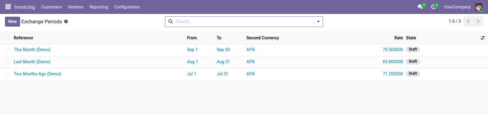

<section style="padding:32px 0;font-family:Roboto,Helvetica,Arial,sans-serif;color:#2b3a34;">
  <div style="max-width:900px;margin:0 auto;padding:0 24px;">

    <p style="font-size:12px;letter-spacing:.14em;text-transform:uppercase;color:#0b6b57;font-weight:600;margin:0 0 10px;">Accounting · Localization</p>
    <h1 style="font-size:40px;line-height:1.1;margin:0 0 14px;font-weight:700;">Dual Currency by Exchange Period</h1>
    <p style="font-size:19px;line-height:1.55;color:#4c5a55;max-width:640px;margin:0 0 28px;">One agreed AFN/USD rate for a whole month, locked once it has been reported, with document totals shown in both currencies.</p>

    <div style="background:#f6f7f5;border-left:3px solid #0b6b57;padding:18px 22px;margin:0 0 32px;font-size:16px;line-height:1.6;"><strong>Odoo converts at the nearest daily rate.</strong> That suits a business marking to market every day. It does not suit an organisation that fixes one rate for a month and uses it for payroll, tax filings and every document issued in that month.</div>

    <div style="margin:0 0 34px;">
      
      <div style="font-size:13px;color:#75837d;padding-top:8px;">One agreed rate per period, and the months before it</div>
    </div>

    <h2 style="font-size:24px;margin:0 0 16px;font-weight:600;">Two things the daily rate table cannot do</h2>
    <ul style="font-size:16px;line-height:1.7;color:#4c5a55;margin:0 0 30px;padding-left:20px;">
      <li><strong>One agreed rate per period</strong> — define a period, set the rate, confirm it — every document dated inside the period uses that rate</li>
      <li><strong>Rates that stop changing</strong> — closing a period locks the rate, so nobody can quietly edit a figure already reported to the ministry</li>
    </ul>

    <h2 style="font-size:24px;margin:0 0 16px;font-weight:600;">Draft, confirmed, closed</h2>
    <table style="width:100%;border-collapse:collapse;margin:0 0 30px;font-size:15px;">
      <thead><tr style="background:#edf0ec;">
        <th style="text-align:left;padding:10px 14px;border-bottom:1px solid #dce1db;">State</th>
        <th style="text-align:left;padding:10px 14px;border-bottom:1px solid #dce1db;">Rate can change</th>
        <th style="text-align:left;padding:10px 14px;border-bottom:1px solid #dce1db;">Used by documents</th>
      </tr></thead>
      <tbody>
        <tr><td style="padding:9px 14px;border-bottom:1px solid #eef1ed;">Draft</td><td style="padding:9px 14px;border-bottom:1px solid #eef1ed;">yes</td><td style="padding:9px 14px;border-bottom:1px solid #eef1ed;">no</td></tr>
        <tr><td style="padding:9px 14px;border-bottom:1px solid #eef1ed;">Confirmed</td><td style="padding:9px 14px;border-bottom:1px solid #eef1ed;">yes, deliberately</td><td style="padding:9px 14px;border-bottom:1px solid #eef1ed;">yes</td></tr>
        <tr><td style="padding:9px 14px;border-bottom:1px solid #eef1ed;">Closed</td><td style="padding:9px 14px;border-bottom:1px solid #eef1ed;">no — reopening is a deliberate act that warns you</td><td style="padding:9px 14px;border-bottom:1px solid #eef1ed;">yes</td></tr>
      </tbody>
    </table>

    <h2 style="font-size:24px;margin:0 0 16px;font-weight:600;">It adds governance, it does not replace Odoo</h2>
    <p style="font-size:16px;line-height:1.65;color:#4c5a55;margin:0 0 14px;">Confirming a period writes an ordinary Odoo currency rate. Invoices, accounting and every existing report keep working exactly as they did — the module puts rules on top of Odoo's own mechanism rather than substituting its own.</p>
    <p style="font-size:16px;line-height:1.65;color:#4c5a55;margin:0 0 30px;">The afghani is activated for you. It ships with Odoo but switched off.</p>

    <h2 style="font-size:24px;margin:0 0 16px;font-weight:600;">On documents</h2>
    <ul style="font-size:16px;line-height:1.7;color:#4c5a55;margin:0 0 30px;padding-left:20px;">
      <li><strong>A second-currency total</strong> — on invoices and bills, converted at the rate agreed for that document's period</li>
      <li><strong>Zero means nothing was assumed</strong> — if no confirmed period covers the date, the total is zero rather than a rate somebody guessed</li>
      <li><strong>An inverse rate shown alongside</strong> — for checking, because the direction of a rate is the easiest thing in accounting to get backwards</li>
    </ul>

    <div style="border-top:1px solid #dce1db;padding-top:20px;font-size:14px;color:#75837d;">Odoo 19.0 Community · depends on <code>account</code> and <code>base_setup</code>.</div>

  </div>
</section>
